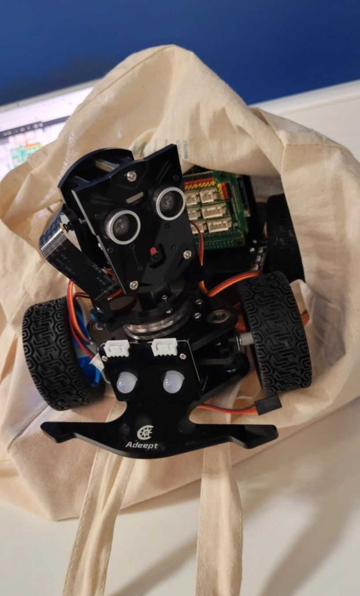

Projet de 1ère et 2ème année. L'objectif est de monter et faire se déplacer un robot le long d'une ligne et le faire réagir à son environnement. Utilisation de capteurs, codage Python sur la carte Raspberry.Projet de 1ère et 2ème année. L'objectif est de monter et faire se déplacer un robot le long d'une ligne et le faire réagir à son environnement. Utilisation de capteurs, codage Python sur la carte Raspberry. Compétences : Électronique · Python (langage de programmation)
